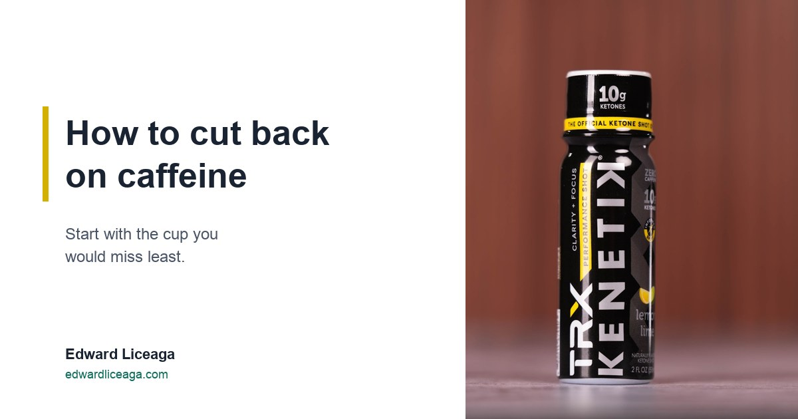

How to Cut Back on Caffeine: Start With the Cup You Would Miss Least
A four week routine that changes one thing at a time, built on what the FDA actually publishes about caffeine.

The usual plan for drinking less caffeine is to quit on a Monday, all at once. A plan that only works if your willpower holds all week is a weak plan.
I would treat it like any other system I run: measure first, change one variable a week, and keep the change that holds. This is how to cut back on caffeine as a routine. It is not medical advice, and if you have a health reason to change your intake, that conversation belongs with your doctor.
Disclosure up front: I sell a caffeine free ketone drink, Kenetik, through a referral link and earn a commission when someone buys through it. It comes up near the end. Read that part with the commission in mind.
Count it before you cut it
You cannot cut back on a number you have never looked at, and coffee makes the number hard to guess. The FDA lists a 12 ounce cup of regular brewed coffee at 113 to 247 milligrams of caffeine. The same size cup can carry twice as much depending on where it came from.
For a reference point, the FDA has cited 400 milligrams a day for most adults as an amount not generally associated with negative effects, which it puts at about two to three 12 ounce cups of coffee. The agency also notes that sensitivity to caffeine, and how fast people clear it, varies a lot from person to person. So that figure is a ceiling the FDA has published. Your own number may sit well below it.
For one normal week, write down every caffeinated drink: what it was, the size, and the time. Include the ones you do not think of as caffeine. The FDA lists a 12 ounce caffeinated soft drink at 23 to 83 milligrams, green tea at about 37, and black tea at about 71.
One label detail makes this harder than it should be. Packaged foods and drinks have to list caffeine in the ingredients when it is added on its own, but they are not required to say how much. Many makers print the amount anyway. When one does not, you are guessing.
Drop the cup you would miss least
Look at your week and find the cup that is pure habit. For most people it is the afternoon one, the cup that happens because it is 2 PM and the walk to the kitchen is a break.
That cup is also the one still partly working when you go to bed. I went through that arithmetic in The Coffee You Drank at 3 PM Is Still Working at Midnight, and it is the easiest place to start because you lose the least by giving it up.
Keep the morning cup for now. The goal of week two is one fewer cup, and the morning one is the hardest to touch.
One change a week
The FDA's own guidance is plain here: if you are used to drinking caffeine every day and want to cut back, it is best to do it gradually. I read that as one change a week, held for the full seven days before the next one.
Here is the four week version I would give a friend:
- Week one: log everything and change nothing. You need the baseline.
- Week two: drop the cup you would miss least, usually the afternoon one.
- Week three: make one remaining cup smaller, or swap it for something with less caffeine.
- Week four: hold steady and compare your log to week one.
If a week does not stick, repeat it. Nobody is grading the calendar.
Decaf is less, not zero
Swapping one cup for decaf is a reasonable week three move, as long as you know what you are getting. The FDA says decaf coffee typically has 2 to 15 milligrams in an 8 ounce cup. That is far less than regular coffee and still more than none. The agency adds that people who react strongly to caffeine may want to skip decaf too.
Replace the break along with the drink
An afternoon coffee is often more about the break than the caffeine: ten minutes away from the screen with something warm in your hand. Cut the cup and nothing else, and the ten minutes is what you end up missing.
So keep the break. Walk to the same kitchen at the same time and drink something else: water, herbal tea, anything without caffeine. The routine survives and the milligrams drop. I wrote about that afternoon window in The 2 PM Wall.
What I keep at the desk
In my afternoon slot I drink Kenetik, which has zero caffeine. The can is 12 grams of ketones, 60 calories, and zero sugar. The TRX shot is a 2 ounce bottle with 10 grams of ketones plus electrolytes, also caffeine free and sugar free.
There is no stimulant in it, so do not expect it to feel like coffee. Ketones are a fuel your brain already knows how to use, and the drink supports clarity, focus, and cognitive endurance. That is the whole claim. If you want to know where it fits in a day, Best Time of Day to Drink Ketones covers the timing.
You do not need my drink to run this plan. Water and a walk work for week two. The log matters more than anything you buy.
Caffeine free, sugar free. My link if you want to try it: https://drinkkenetik.com/EDDIEG
Promo code: EDDIEG
I earn a commission on purchases through this link. This article is consumer information and is not medical advice. Caffeine figures and guidance quoted from "Spilling the Beans: How Much Caffeine Is Too Much?", fda.gov (content current as of August 28, 2024), checked October 19, 2026.